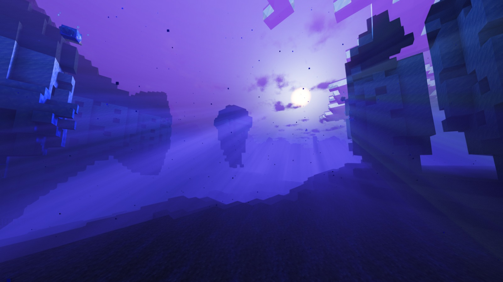
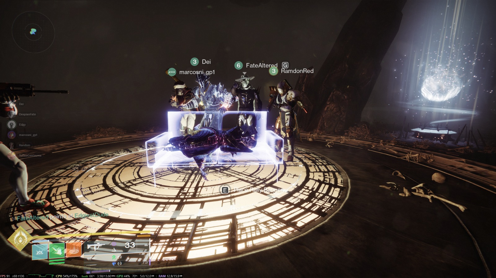

Diego Hernandez
Edad: 21 años
Cédula: 20-1019-2389
Hola soy Diego Hernandez algunos diran que soy el triste como la cancion de Jose Jose pero es una de mis canciones favoritas so que triste. Este fondo es de minecraft uno de mis videojuegos favoritos.

Destiny 2 Fireteam
Class: Warlock
Raid: Crota's End
Este es mi Fireteam de Destiny 2 para hacer raids y mis mejores amigos. mis twins. mis compas. mis amiguis.